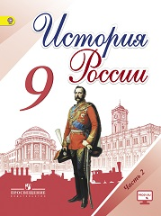

В учебнике освещаются ключевые вопросы и основные события истории России XIX-начала XX в. В основе методического аппарата учебника лежит системно-деятельностный подход в обучении, направленный на формирование у школьников универсальных учебных действий. Этому способствуют разноуровневые вопросы и задания, отрывки из исторических источников, темы для проектов, творческих работ и др.
§22. Александр III: особенности внутренней политики
§23. Перемены в экономике и социальном строе
§24. Общественное движение в 1880-х — первой половине 1890-х гг.
• Национальная и религиозная политика Александра III
§25. Внешняя политика Александра III
• Культурное пространство империи во второй половине XIX в.: Русская литература
• Культурное пространство империи во второй половине XIX в.: Художественная культура народов России
• Повседневная жизнь разных слоёв населения в XIX в.
§26. Россия и мир на рубеже XIX—XX вв.: Динамика и противоречия развития
§27. Социально-экономическое развитие страны на рубеже XIX—XX вв.
§28. Николай II: начало правления. Политическое развитие страны в 1894—1904 гг.
§29. Внешняя политика Николая II. Русско-японская война 1904—1905 гг.
§30. Первая российская революция и политические реформы 1905—1907 гг.
§31. Социально-экономические реформы П. А. Столыпина
§32. Политическое развитие страны в 1907—1914 гг.
• Серебряный век русской культуры